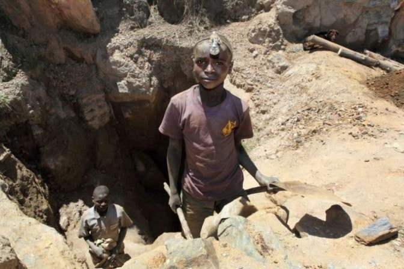
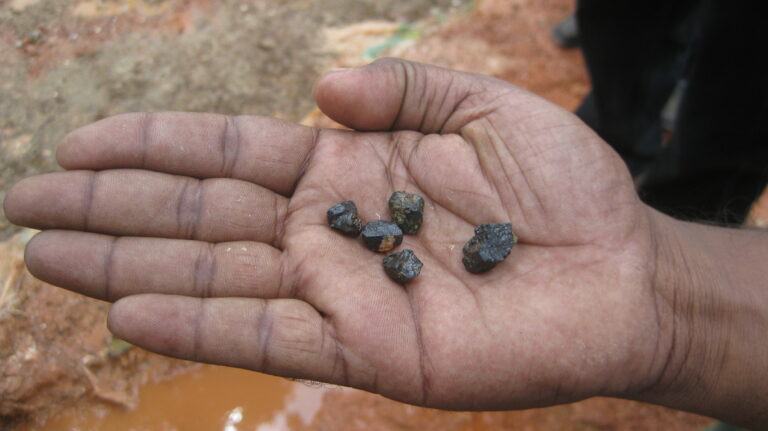
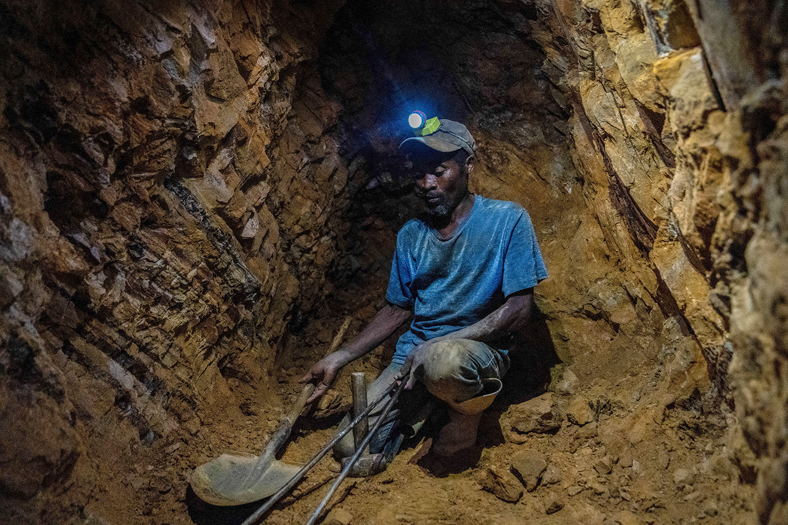
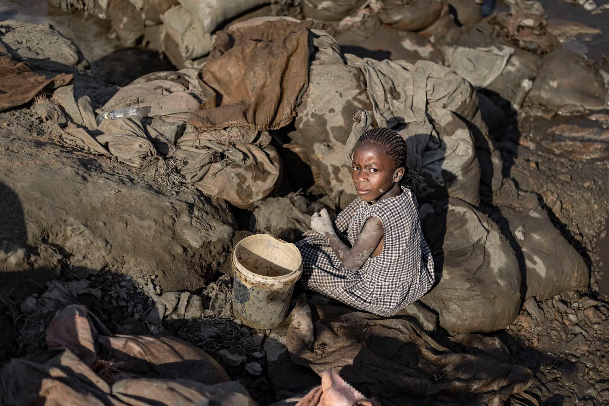

Ontbossing en bodemverstoring
Coltanmijnbouw draagt bij aan ontbossing en tast de bodemstructuur aan. Het verwijderen van vegetatie vergroot de erosie, terwijl diepere graafwerken de bodem verder verstoren.
Tantalum voor een condensator begint meestal bij coltan. Die eerste stap in de keten lijkt ver weg, maar bepaalt al een groot deel van de ecologische, sociale en ethische impact van het product.

Coltan is een erts waaruit tantalum wordt gehaald. Dat metaal is belangrijk voor tantalumcondensatoren omdat het veel lading kan opslaan in een klein volume en daarom vaak gebruikt wordt in compacte elektronica. Ongeveer 40% tot 60% van de wereldwijde coltanproductie komt uit de Democratische Republiek Congo, al zijn exacte cijfers moeilijk te bepalen door informele mijnbouw en smokkel.
De keten start bij de ontginning van grondstoffen en verloopt via transport en raffinage tot zuiver tantalumpoeder, dat uiteindelijk verwerkt wordt in elektronische componenten. De ontginning vormt daarmee de basis van de volledige levenscyclus.

Bron: Mänsklig Säkerhet, "DRC:s coltan- an asset for illegal traders", https://manskligsakerhet.se/2021/06/01/drcs-coltan-an-asset-for-illegal-traders/
Coltanmijnbouw draagt bij aan ontbossing en tast de bodemstructuur aan. Het verwijderen van vegetatie vergroot de erosie, terwijl diepere graafwerken de bodem verder verstoren.
Bij coltanmijnbouw worden ertsen vaak in rivieren en beken gewassen, wat sediment en schadelijke stoffen in het water brengt. Ook slecht afgesloten mijnputten en afvalbergen kunnen die vervuiling verder verspreiden.
Wanneer mijnen uitbreiden verdwijnen leefgebieden en worden ecosystemen verstoord. Zo worden bedreigde diersoorten kwetsbaar voor stropers.
Wereldwijd draagt de mijnbouwsector tussen de 4 - 7% bij voor de broeikasgasuitstoot. Deze luchtvervuiling belemmert de groei van planten en verstoort de photosynthese.
De vraag naar nieuwe technologie brengt vaak een zware menselijke kost met zich mee. In mijnregio's worden mensenrechten geschonden, afspraken niet gerespecteerd en natuurgebieden uitgeput. Meer dan één miljoen mensen raakten ontheemd door gewapende groepen die gelinkt zijn aan de mijnbouw, terwijl getroffen gemeenschappen vaak weinig of geen compensatie kregen.
Zo blijft een vicieuze cirkel bestaan waarin lokale gemeenschappen de grootste lasten dragen, terwijl anderen de winsten opstrijken. Zelfs kinderen worden nog steeds illegaal ingezet in de ontginning van coltan, ondanks strengere regelgeving.

Vaak werken mijnwerkers in gevaarlijke omstandigheden, waar ze onder andere blootgesteld worden aan radioactieve stoffen.
Meer dan 40.000 kinderen en tieners worden ingezet in de mijnen. Vele hiervan zijn ziek en worden misbruikt.
Gewapende groepen zoals M23 voeren controle uit op mijnsites en gebruiken de winst om hun activiteiten te financieren.
Lokale gemeenschappen dragen vaak de lasten, terwijl de grootste economische meerwaarde elders terechtkomt.



Bron: CNES 2021, Distribution Airbus DS
Bij de uitbreiding van mijnsites worden volledige gemeenschappen gedwongen hun huizen te verlaten. Volgens Amnesty International gebeurt dit vaak zonder voldoende compensatie of alternatieve huisvesting. Hierdoor verliezen bewoners niet alleen hun woning, maar ook toegang tot landbouwgrond en andere essentiële bestaansmiddelen. In sommige gevallen gaan deze verplaatsingen gepaard met intimidatie en geweld, wat de kwetsbaarheid van getroffen gemeenschappen verder vergroot.
Kolwezi is een belangrijke casestudy omdat de regio sterk beïnvloed wordt door grootschalige mijnactiviteiten. Amnesty International toont aan dat duizenden mensen in en rond Kolwezi hun woningen en gemeenschappen zijn kwijtgeraakt door de uitbreiding van mijnsites. Dit maakt de regio een duidelijk voorbeeld van de sociale impact van grondstoffenwinning.
Bedrijven kunnen sterker inzetten op due diligence en controle van leveranciers.
Certificatie en strengere regelgeving kunnen de druk verhogen op verantwoorde ontginning.
Meer gerecycleerd tantalum vermindert de afhankelijkheid van nieuwe mijnbouw.
Lokale gemeenschappen moeten inspraak, bescherming en correcte compensatie krijgen bij uitbreiding van mijnen.